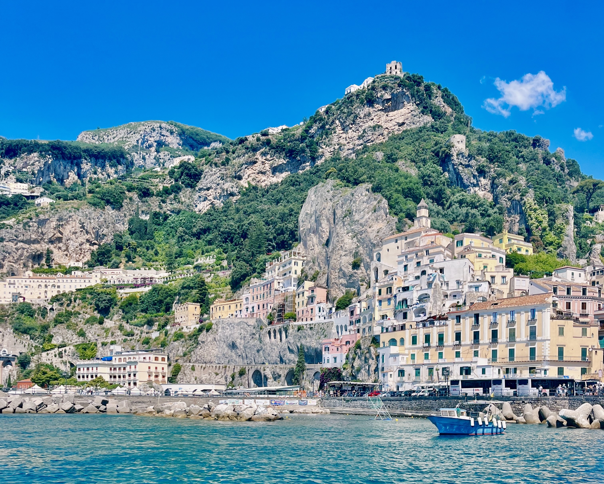

My Mission
My mission is to help guide and advice and guide other on their future travel plans to Italy through sharing my personal experience traveling through the country. By providing information on my favorite destinations, attractions, and dinning, I hope to help others efficiently plan and schedule their next trip.
Italy is a beautiful country with so much to offer for everyone. Its colorful history goes back centuries. Traces of its many people and periods can be found scattered about through monuments and ruins. The Mediterranean climate of Italy allows for luscious greenery, bountiful crops, and year-round exploration of the country’s mountains, coastlines, and lakes.
With all that Italy has to offer, it is important to schedule and plan your trip ahead of time so you can visit all the great wonders of the country.
City Guides
Each city guide provides numerous different adventures and features of each city. Each page includes popular monuments, museums, recommendations on food, lodging, and more! These compiled guides are here for your benefit and to help you decide where your next destination will be.
